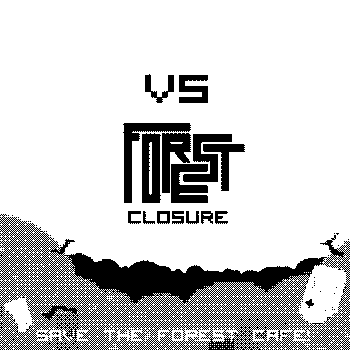

My new track Forest Dub is featured on the Ultrachip benefit compilation; an album to raise much needed funds to help save the Forest Cafe in Edinburgh. Grab the full-length album featuring chip heroes gwEm, Jellica, ant-cat-max and many, many, more on Bandcamp now at http://ultrachip.bandcamp.com/. Read what Gary Lee, otherwise known as Sycamore Drive, had to say about the Forest Cafe on the Guardian website here.
A benefit compilation for Edinburgh venue The Forest, featuring contributions from every performer at 2010′s Ultrachip chipmusic festival.
All proceeds go directly to The Forest, an autonomous arts and cultural space in Edinburgh that currently faces closure unless it can raise enough funds to purchase its premises. More info about the situation is available here: theforest.org.uk
The bulk of these tracks are exclusive to this release. Help protect this important venue and get some good music at the same time.
One Trackback
[...] This post was mentioned on Twitter by firebrandboy, firebrandboy. firebrandboy said: Ultrachip VS Forest Closure now on Bandcamp http://is.gd/hYYtX http://is.gd/hYYyo Features @tonylightlight @gw3m & more! @foresttweets #chip [...]